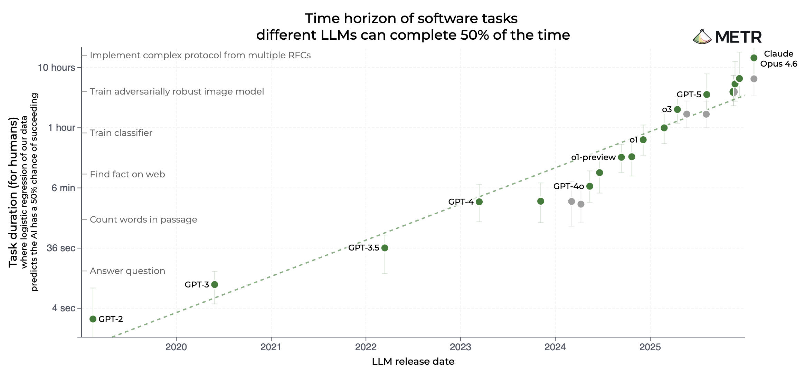
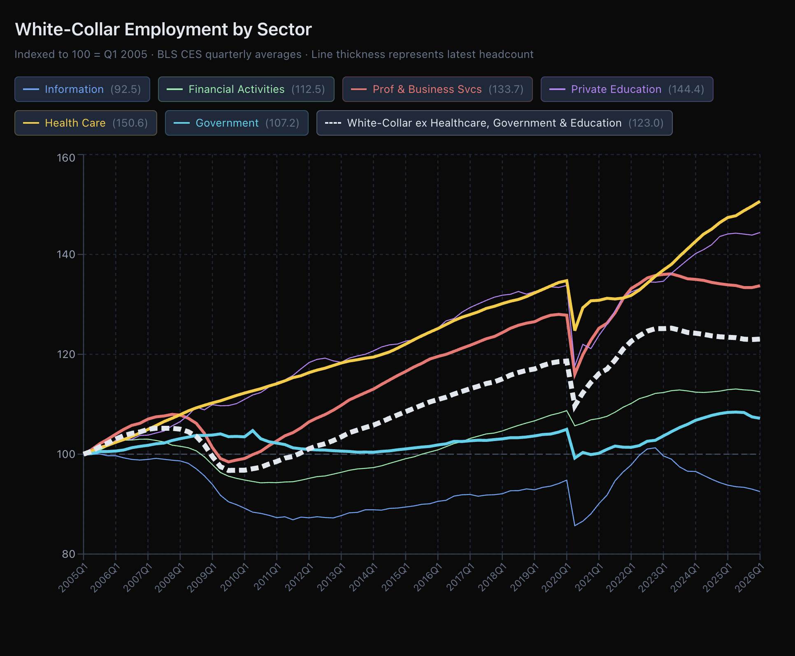

수년 간의 기하급수적인 성장 끝에, 최근 '에이전트 AI(Agentic AI)'로의 도약은 2026년부터 우리가 알던 세상을 뒤집어 놓을 것입니다. 불편한 진실은 이것입니다: AI는 더 이상 단순한 경제 성장 도구가 아닙니다. AI는 인간의 인지 노동을 거의 직접적으로 대체하는 대체재입니다. 단기적으로 AI는 새로운 시장이 흡수할 수 있는 것보다 훨씬 빠르게 화이트칼라 노동자들을 대체할 것입니다.
우리의 전체 경제 시스템은 "인간 지능은 희소하고 비싼 자원이다"라는 단 하나의 전제 위에 세워졌습니다. 이것이 원자재를 우리의 생활 수준을 결정하는 재화와 서비스로 바꾸는 핵심 투입 요소였습니다. 하지만 2026년, 에이전트 AI의 시대가 도래하면서 그 근본적인 가정은 무너지고 있습니다.
AI는 더 이상 단순한 도구나 보완재가 아닙니다. 인간의 인지 노동을 직접 대체하는 존재가 되고 있습니다. 이러한 변화는 화이트칼라 업무의 가치를 근본적으로 떨어뜨립니다. AI 발전과 자본의 쏠림으로 인해 이러한 대체 현상은 가속화될 것이며, 이는 산업혁명, 글로벌 금융 위기, 팬데믹을 능가하는 경제적 충격을 가져올 수 있습니다. 긴급한 정책적 대응 없이는 향후 2년 내에 심각한 금융 위기를 초래할 가능성이 있습니다.
대화형 챗봇으로서의 AI 시대는 끝났습니다. 지난 6개월 동안 우리는 복잡하고 다단계의 워크플로우를 자율적으로 실행하는 시스템, 즉 에이전트 AI(Agentic AI)의 시대로 진입했습니다.
진화의 속도는 놀랍습니다. 자율 AI 역량을 평가하는 METR에 따르면, 모델이 도움 없이 완료할 수 있는 작업의 지속 시간은 6~7개월마다 두 배로 늘어나고 있으며, 최근 추세는 더욱 가속화되고 있음을 보여줍니다. 오늘날 선도적인 모델들은 14.5시간 동안 연속적이고 자율적인 작업을 수행할 수 있습니다.
위 차트는 2019년 이후의 시간 지속 추세선을 보여줍니다. 최근의 가속화와 함께 장기적이고 일관된 추세를 볼 수 있습니다. Y축은 로그 스케일이므로, 직선 추세는 기하급수적인 하키 스틱 성장을 의미합니다.

이 추세선은 2028년 중반까지 AI가 도움 없이 한 달 동안 작업을 수행할 수 있게 될 것임을 가리킵니다.
저는 Viking Global과 Citadel 같은 대형 헤지펀드에서 소비자 분석가로 금융 경력을 시작했습니다. 2011년 제 펀드인 LOTUS를 운영하기 위해 떠났을 때, 제 성과의 제한 요소는 시장을 움직이는 정보의 홍수를 처리하는 능력이었습니다. 그래서 형과 함께 AI 금융 검색 엔진인 Sentieo를 만들었고, 2022년에 2억 달러 이상에 매각했습니다.
Sentieo를 만들면서 제 세계관은 근본적으로 바뀌었습니다. AI는 궁극적인 힘의 승수(Force Multiplier)라는 것을 깨달았습니다. 현재 제 회사들에서는 에이전트 AI 추세를 관찰하는 것에 그치지 않고, 조직 전체를 에이전트 기반으로 공격적으로 재설계했습니다.
가장 극적인 변화는 소프트웨어 엔지니어링에서 일어났습니다. 예전에는 새 기능을 프로토타이핑하는 데 기획 1주, 개발 1주가 걸렸습니다. 지금은 에이전트 코딩 인터페이스에 상세한 프롬프트를 입력하면 몇 분 만에 기능하는 프로토타입을 만들어냅니다. 초기 빌드 과정에서 인간을 거의 배제함으로써 제품 출시 속도를 획기적으로 높였습니다.
LOTUS에서도 비슷한 일이 일어나고 있습니다. 예전에는 새로운 투자 아이디어를 분석가에게 맡기면, 자료 조사와 모델링, 메모 작성까지 며칠이 걸렸습니다. 오늘날 에이전트 AI는 공시 자료와 핵심 논쟁을 종합하고, 재무 모델을 구축하고, 비슷한 품질의 포괄적인 메모를 몇 분 만에 생성합니다. 이 작업에 드는 토큰 비용은 인간 인건비의 1%도 되지 않습니다.
에이전트는 잠을 자지 않고, 휴가를 가지 않으며, 필요에 따라 수천 개의 에이전트 군집(Swarm)으로 확장하거나 축소할 수 있습니다.
모든 비즈니스에서 가장 크고 기하급수적인 비용은 인간 간의 조정(Coordination)입니다. 경제학자 로널드 코스(Ronald Coase)의 기업 이론에 따르면, 기업은 내부 조정 비용이 시장 거래 비용보다 낮을 때 존재합니다.
창업자에서 PM으로, PM에서 엔지니어로 지시를 전달하는 것은 정보가 손실되는 전화기 게임과 같습니다. 모두를 정렬시키기 위해 끝없는 메시지, 회의, 프레젠테이션이 필요합니다. 사실상 Outlook, Word, PowerPoint, Excel 전체가 인간 조정 기술이라고 볼 수 있습니다.
반면, AI 에이전트들은 거의 완벽하고 지속적인 맥락(Context)을 공유합니다. 인간을 에이전트로 대체하면 이 막대한 조정 비용(세금)이 사라지고, 마찰은 줄어들며, 생산량은 급증합니다.
AI 연구소들에서는 지난 1년 동안 화이트칼라 일자리 대체에 대한 경고음이 커져왔습니다.
"AI는 향후 1~5년 안에 모든 초급 화이트칼라 일자리의 절반을 없앨 수 있으며, 실업률을 10~20%까지 치솟게 할 수 있다." - 다리오 아모데이 (Anthropic CEO), 2025년 5월
"변호사, 회계사, 프로젝트 관리자, 마케터 등 컴퓨터 앞에 앉아 일하는 화이트칼라 업무의 대부분은 향후 12~18개월 내에 AI에 의해 완전히 자동화될 것이다." - 무스타파 술레이만 (Microsoft AI CEO), 2026년 2월
CEO들은 해고 위험이 경제 전반에 미칠 파장에 대해 언급하기를 꺼려왔지만, 그들의 경고는 분명합니다.
위 차트는 정부 지출(공무원, 의료, 교육)을 제외한 핵심 화이트칼라 고용 추이를 보여줍니다. 2023년 이후 정체되거나 감소하는 추세가 뚜렷합니다. 지난 6년 동안 인구는 5%, 실질 GDP는 11% 성장했지만, 핵심 화이트칼라 일자리는 고작 4% 늘어나는 데 그쳤습니다. AI로 인한 일자리 손실의 진원지인 정보(Information) 섹터는 이미 정점 대비 8% 하락했습니다.
기업들은 에이전트 AI가 본격화되기도 전에 이미 더 적은 인력으로 더 많은 일을 하고 있습니다.
에이전트 AI는 이러한 추세를 가속화할 것이며, 시장의 힘은 이를 증폭시킬 것입니다. 대기업이 느리게 움직일 것이라는 비판도 일리가 있지만, 대부분의 기업은 경쟁 시장에 있습니다. 에이전트 AI 도입이 늦은 기업은 비용 불이익을 겪고 도태될 것입니다. CEO들은 이를 이해하고 있으며, 2026년 최우선 과제로 AI 도입을 추진하고 있습니다.
화이트칼라 노동 시장의 수급 균형을 무너뜨리는 데는 많은 해고가 필요하지 않습니다. 12~24개월 내에 화이트칼라 일자리가 5%만 줄어든다고 가정해 봅시다. (다리오나 무스타파의 예측보다 훨씬 보수적인 수치입니다.)
AI 발전 속도를 고려할 때 이 일자리들은 돌아오지 않을 것입니다. 밀려난 노동자들은 블루칼라나 긱 이코노미(Gig Economy)로 내몰려 전체 임금 하락 압력을 가할 것입니다. 일자리를 지킨 사람들도 위험을 감지하고 소비를 급격히 줄일 것입니다.
우리는 Citrini와 함께 2부에서 위기가 어떻게 전개될지에 대한 상세한 타임라인을 작성했습니다.